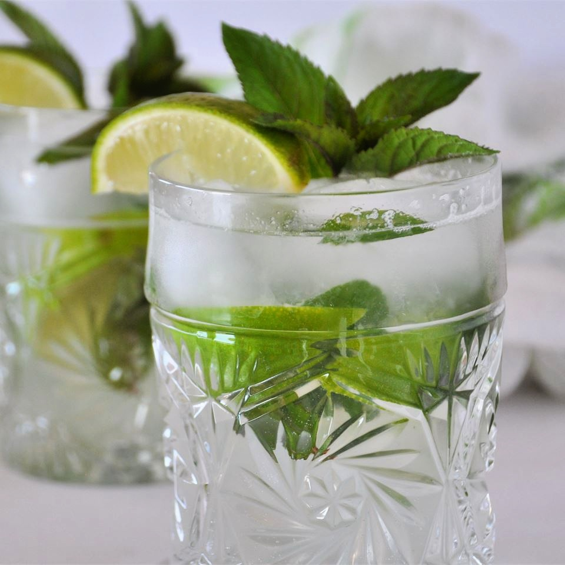

The real mojito(maybe)

This in an authentic recipe for mojito (insert doubt meme).
I sized the recipe for one serving, but you can adjust it accordingly and
make a pitcher full. It's very refreshing drink for hot summer day (in my country they are very hot).
But careful when drinking it, however. If you make a pitcher you might be tempted to drink the whole
thing yourself (I'll do it anyway), and you just might find yourself talking Spanish in no time! (I don't care, Spanish is my native language).
Ingredients
- 10 fresh mint leaves.
- 1/2 medium line, cut into 3 wedges, divided.
- 2 tablespoon white sugar, or to taste.
- 1 cup (240ml) ice cubes, or as needed.
- 1 1/2 fluid ounces (44ml) white rum.
- 1/2 cup (120ml) club soda, or as needed.
Steps
- Place mint leaves and 1 lime wedge into a sturdy glass. Use a muddler
and crush to release mint oils and lime juice.
- Add remaining lime wedges and 2 tablespoon sugar and muddle again to release
the lime juice. Do not strain the mixture.
-
Fill the glass almost to the top with ice. Pour in rum and fill the glass with club soda.
- Stir, taste, and add more sugar if desired.